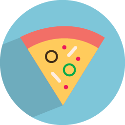
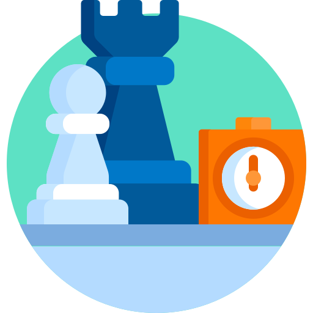
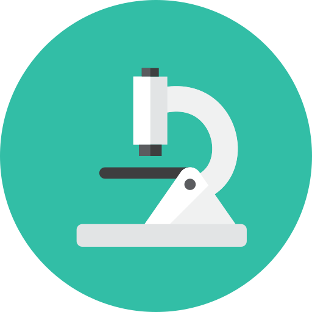

Como catapimbas cheguei aqui?
Descobri a área de tecnologia em um curso técnico da ETEC e desde então estudo para ajudar pessoas a resolverem seus problemas através dela. Peguei gosto por melhorar a eficiência de processos de todo tipo utilizando o que aprendo do mundo digital. Tenho sido especialmente pragmático em melhorar a minha forma de trabalhar e estou sempre buscando novas ferramentas e métodos para automatizar e abordar minhas tarefas.
Atualmente estou matriculado no curso de tecnologia de Análise e Desenvolvimento de Sistemas pela FATEC Zona Leste. Após a ETEC, sempre soube que seguiria em tecnologia mas não tinha certeza se queria cursar o ensino superior propriamente disso. Hoje acredito que foi uma decisão acertiva ingressar e frequentar faculdade, estou tendo contato com experiências, lições e idéias que são tão incríveis e valiosas quanto as aulas, tarefas e matérias que tenho lá.
Meu objetivo profissional atualmente é me tornar um desenvolvedor generalista e conseguir enfrentar modestamente desafios nas mais variadas áreas dentro de tecnologia. Amo trabalhar com coisas novas e diferentes e a sensação de "mudança de ares". Talvez seja audacioso, todavia acredito que tenho capacidade portanto estou trabalhando dia-a-dia para melhorar minha desenvoltura e me aproximar cada vez mais disso.
Coisas que eu curto
 Videogames
Videogames- Pizza
- Xadrez
 Ilustração
Ilustração Livestreams
Livestreams- Ciências